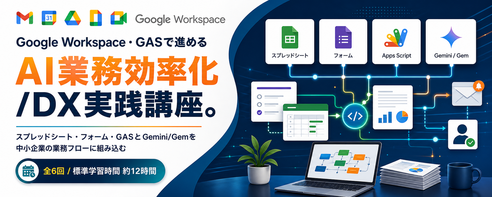
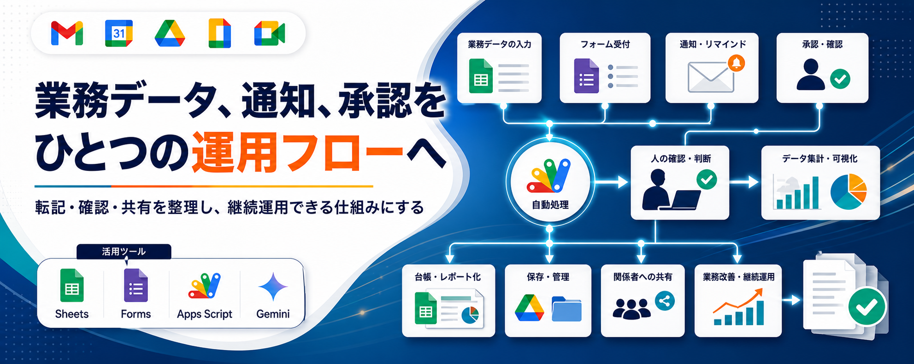

日々のExcel的な転記、集計、確認、通知、受付管理、会議後の宿題整理を題材に、Google Workspace、GAS、Gemini/Gem、Meet文字起こしによるAI活用、運用設計、導入提案書作成までを一貫して学ぶ実践型講座です。
中小企業でよく発生する、Excelファイルの転記、スプレッドシート集計、フォーム受付、申請管理、日報回収、担当者通知、期限リマインド、帳票作成、会議後のアクション整理などの反復業務を題材に、Google WorkspaceとGASを使った業務改善を自走できる人材を育成します。
単なるツール操作ではなく、業務フローの整理、データ項目の設計、自動化範囲の切り分け、Gem/Geminiによる分類・要約・返信案作成、Gmail・Drive・Docs・Calendar・Meet文字起こしなどのGeminiのGoogle Workspace連携活用、権限管理、ログ、例外対応、テスト、引き継ぎ、継続運用までを扱います。課金や管理者設定が必要な高度機能は必須演習から外し、無料範囲または利用環境に応じて説明できるAI活用を中心にします。
| 項目 | 内容 |
|---|---|
| 方式 | eラーニング、オンラインワークショップ、またはハイブリッド。LMSによる受講状況、受講時間、課題提出、修了確認の記録を前提にします。 |
| 時間 | 6回、各120分、合計約12時間。2か月以内を目安に、実務演習と課題作成を組み合わせて進めます。 |
| 環境 | Google Workspaceまたは検証用Googleアカウント、サンプルデータ、ダミー顧客情報を使用します。 |
| 成果物 | 業務棚卸しシート、フォーム設計書、スプレッドシート台帳、Gem設計書、Meet文字起こし活用メモ、GASミニプロトタイプ、通知文テンプレート、運用設計書、リスクチェックリスト、導入提案書。 |
Gmail、Sheets、Driveを個別に使うだけで、受付、管理、通知、保存が業務フローとしてつながっていない。
担当者ごとの手作業に依存し、転記ミス、確認漏れ、対応遅れが起きやすい。
Googleフォームを使っていても、回答後の採番、通知、ステータス管理、保存が手作業になっている。
外部ツールを増やす前に、今あるGoogle WorkspaceとGemini/Gemで小さく業務改善を始めたい。
Meetの文字起こしや会議メモから、決定事項、担当者、期限、次回確認事項を台帳化したい。

| 回 | テーマ | 主な内容 | 成果物 |
|---|---|---|---|
| 1 | 業務DXの基礎とGoogle Workspace活用設計 | 中小企業のDX課題、Excel的な手作業、Google Workspace、AI/GASで置き換える範囲、As-Is/To-Be。 | 業務棚卸しシート、AI/GAS活用候補リスト |
| 2 | フォームとスプレッドシートの受付・台帳設計 | Forms、Sheetsを使った受付・管理の設計、データ項目、入力ルール、権限。 | 受付フォーム、管理台帳、データ項目定義 |
| 3 | GASでExcel的な処理を自動化する | GASの基本、SpreadsheetApp、行取得、条件抽出、転記、集計、重複チェック、ログ。 | スプレッドシート自動処理スクリプト |
| 4 | Gem/Geminiを使った文書作成・分類・要約 | Geminiアプリ、Gem作成、GeminiのGoogle Workspace連携、Meet文字起こし活用、問い合わせ分類、返信案、日報要約、資料要約、GASコード読解。 | Gem設計書、Meet文字起こし活用メモ、AI活用プロンプト |
| 5 | AI/GAS自動化の要件定義・運用設計 | フォーム送信、通知、帳票、AI手動連携、Meet文字起こしDocs/テキストのGAS活用、GeminiのGoogle Workspace連携利用可否、例外処理、AI入力禁止、権限、ログ、復旧手順。 | 要件定義メモ、運用設計書、リスクチェックリスト |
| 6 | AI業務効率化プロジェクト提案書の作成 | KPI、削減時間試算、Gem/GAS/GeminiのGoogle Workspace連携/Meet文字起こし活用、録画用作業風景、導入ロードマップ、改善サイクル。 | AI/GASミニプロトタイプ、導入提案書 |
Google Formsで受け付けた問い合わせをSheetsに集約し、Gemで分類案と返信案を作る。
CSV貼り付けデータを整形し、重複を検出し、未対応行だけ別シートへ転記する。
日報や作業報告をSheetsに集約し、部署別・担当者別・週別に集計し、Gemini/Gemで要約下書きを作る。
期限が近い対応項目をCalendar/Gmailでリマインドし、対応漏れを防ぐ。
ダミー議事録や報告書をGeminiのGoogle Workspace連携またはGemへの貼り付けで要約する。
文字起こしDocsまたは配布テキストから、決定事項、宿題、担当者、期限を抽出し台帳へ戻す。
架空フォロー台帳から次回提案、返信案、Calendar登録候補を作る。
| 大項目 | 小項目 | 時間 |
|---|---|---|
| 中小企業の業務DX | Google Workspaceで始める小さなDX、Google Workspace、今回扱う範囲と扱わない範囲 | 20分 |
| 業務課題の可視化 | Excel的な手作業、転記、集計、確認漏れ、属人化の洗い出し | 30分 |
| As-Is/To-Be設計 | 現状業務フロー、理想業務フロー、関数・GAS・AI・人の確認の切り分け | 30分 |
| 改善候補の選定 | 効果、頻度、難易度、リスクで優先順位をつける | 20分 |
| 演習 | 自社または共通ケースの業務棚卸しシートを作る | 20分 |
| 大項目 | 小項目 | 時間 |
|---|---|---|
| 受付業務の全体像 | 問い合わせ、申請、アンケート、日報をフォーム化する考え方 | 20分 |
| Sheets設計 | 受付番号、ステータス、担当者、期限、更新日時、入力規則、集計項目 | 30分 |
| Forms/Gmail連携 | 受付フォーム、回答先シート、確認メール、担当者通知の整理 | 25分 |
| Drive設計 | フォルダ構成、命名規則、テンプレート、権限管理 | 25分 |
| 演習 | 受付・管理シートと通知設計メモを作る | 20分 |
| 大項目 | 小項目 | 時間 |
|---|---|---|
| GASの基礎 | Apps Scriptの役割、エディタ、実行、承認、ログ | 20分 |
| Sheets自動化 | データ取得、条件抽出、転記、集計、重複チェック、ステータス更新 | 35分 |
| カスタムメニュー | 現場担当者が押せる実行ボタン、手動再実行 | 20分 |
| 例外処理 | 空欄、重複、対象行なし、ログ、エラー通知 | 25分 |
| 演習 | 未対応行抽出と転記のミニスクリプトを作る | 20分 |
| 大項目 | 小項目 | 時間 |
|---|---|---|
| AI活用の位置づけ | GASは処理、Gemini/Gemは分類・要約・下書き、人は確認 | 20分 |
| GeminiのGoogle Workspace連携とMeet文字起こし | Gmail、Drive、Docs、Calendar、Meet文字起こしの検索・要約・整理と代替手順 | 25分 |
| Gem設計 | 目的、役割、入力、出力形式、禁止事項、判断基準、参照範囲 | 20分 |
| 業務ユースケース | 問い合わせ分類、返信案、日報要約、Drive資料要約、Meet文字起こし整理、GASコード読解 | 30分 |
| AI出力レビュー | 事実、推測、要確認、利用不可、修正メモ | 25分 |
| 演習 | 業務用Gem設計書とAI活用プロンプトを作る | 20分 |
| 大項目 | 小項目 | 時間 |
|---|---|---|
| 要件定義 | 対象業務、利用者、入力元、出力先、GAS処理、AI処理、GeminiのGoogle Workspace連携/Meet文字起こし利用可否 | 30分 |
| フォーム通知・帳票 | 受付番号、確認メール、担当者通知、Drive保存、Docs差し込み | 25分 |
| 運用設計 | AI入力禁止、ログ、出力レビュー、GeminiのGoogle Workspace連携やMeet文字起こし不可時の代替、エラー通知、手動復旧 | 30分 |
| 制限とリスク | GASの割り当て制限、大量処理、送信上限、停止時の対応 | 20分 |
| 演習 | 要件定義メモとリスクチェックリストを作る | 15分 |
| 大項目 | 小項目 | 時間 |
|---|---|---|
| 提案書の構成 | 背景、課題、対象業務、To-Be、AI/GAS/GeminiのGoogle Workspace連携/Meet文字起こし活用構成、運用体制 | 20分 |
| KPIと効果試算 | 削減時間、対応速度、ミス削減、品質安定、費用対効果 | 25分 |
| ロードマップ | 試行、本番化、教育、運用、改善の段階設計 | 25分 |
| 発表・レビュー | 作業風景、ミニプロトタイプ、運用設計、リスク、導入効果の説明 | 40分 |
| 振り返り | 自社導入に向けた次のアクション整理 | 10分 |